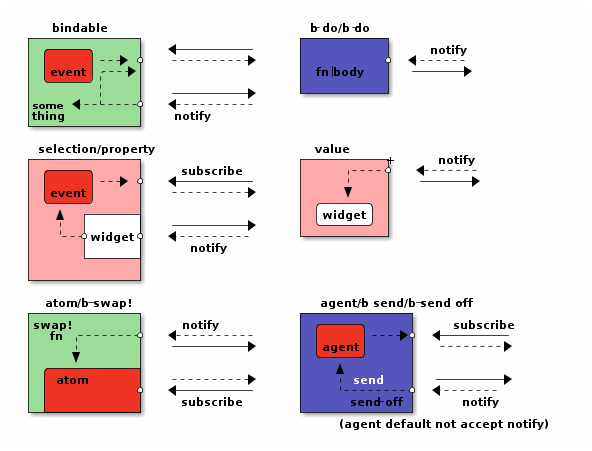
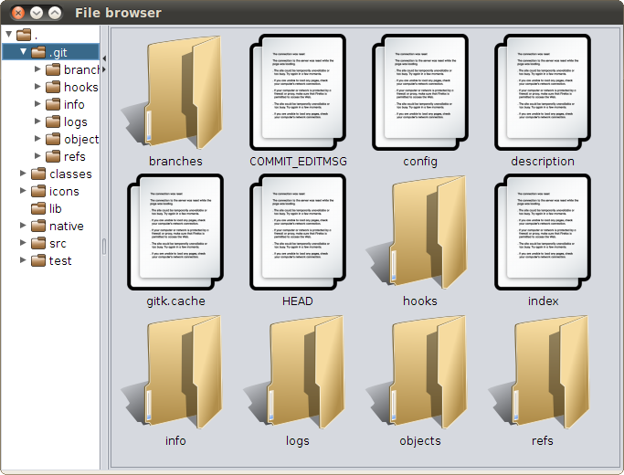

A Swing DSL for Clojure
|=================================|
|- dir | file |
| - | file2 |
| + | file3 |
| - subdir | |
|==================================
add seesaw to your project.clj
[seesaw "1.3.1-SNAPSHOT"]
start a repl
user>(use 'seesaw.core)
seesaw.dev have some very useful functions for development, especially debug!, highly recommended.
user>(use 'seesaw.dev) user>(debug!)
first create the main frame
user>(def browser (frame :title "File browser")) user>(show! browser)
The frame has no content, only border.
We can set the size by
user>(config! browser :size [600 :by 600]
show!, config! by clojure idiom, have side effect. Here, they'll change state of widget.
Let's add some content.
In the draft, there is left and right two part, we need use
widget like JSplitPane.
user>(config! browser :content
(left-right-split (tree) (listbox)))
Seesaw use css style selector to conveniently fetch widget.
To do so assigned an id to the widget
user>(use 'seesaw.tree)
user>(config! browser :content
(left-right-split (tree :id :dirs)
(listbox :id :files)))
(config! (select browser [:#dirs]) :model (simple-tree-model #(.isDirectory %) #(->> % .listFiles (filter (memfn isDirectory))) (java.io.File. ".")))
Seesaw support folloing css styled selectors:
(config! (select browser [:#dirs]) :renderer (proxy [javax.swing.tree.DefaultTreeCellRenderer] [] (getTreeCellRendererComponent [t value s e l r h] (do (proxy-super getTreeCellRendererComponent t value s e l r h) (proxy-super setOpenIcon (icon (file "icons/open.png"))) (proxy-super setClosedIcon (icon (file "icons/closed.png"))) (proxy-super setText (.getName value))) this)))
(require '[seesaw.bind :as b]) (b/bind (b/selection (select browser [:#dirs])) (b/transform (fn [files] (when (seq files) (let [current (last files)] (when (.isDirectory current) (vec (map #(.getName %) (.listFiles current)))))))) (b/property (select browser [:#files]) :model))

(config! browser :content (left-right-split (tree :id :dirs) (scrollable (mig-panel :id :files :constraints ["wrap 4" "" ""]) :hscroll :never) :one-touch-expandable? true))
(b/bind (b/selection (select browser [:#dirs])) (b/transform (fn [files] (when (seq files) (let [current (last files)] (when (.isDirectory current) (vec (.listFiles current))))))) (b/b-do* refresh-files-view))
(defn refresh-files-view [files] (let [files-pane (select browser [:#files])] (.removeAll files-pane) (doseq [f files] (let [file-icon (-> (if (.isDirectory f) "icons/folder.png" "icons/document.png") file icon) file-name (apply str (take 20 (.getName f)))] (.add files-pane (label :text file-name :icon file-icon :v-text-position :bottom :h-text-position :center :listen [:mouse-clicked (fn [e] (if (and (= (.getClickCount e) 2) (not (.isConsumed e)) (.isDirectory f)) (refresh-files-view (.listFiles f))))])))) (doto files-pane (.revalidate ) (.repaint))))
(listen widget
:action (fn [e] ..))
(listen widget
#{:clicked :focus} (fn [e] ..))
